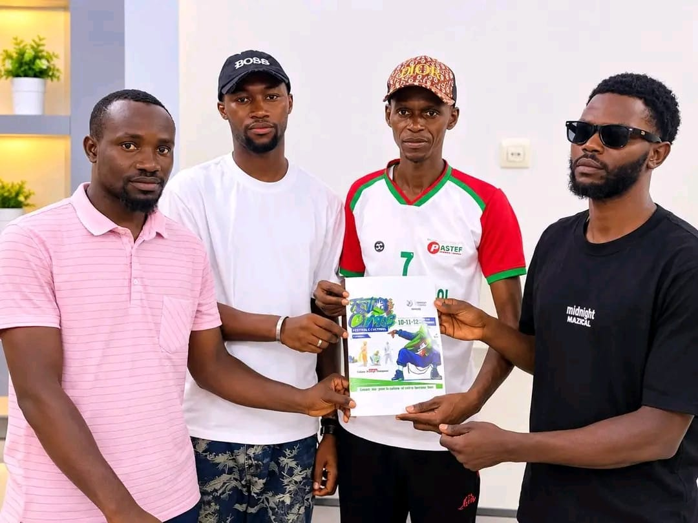
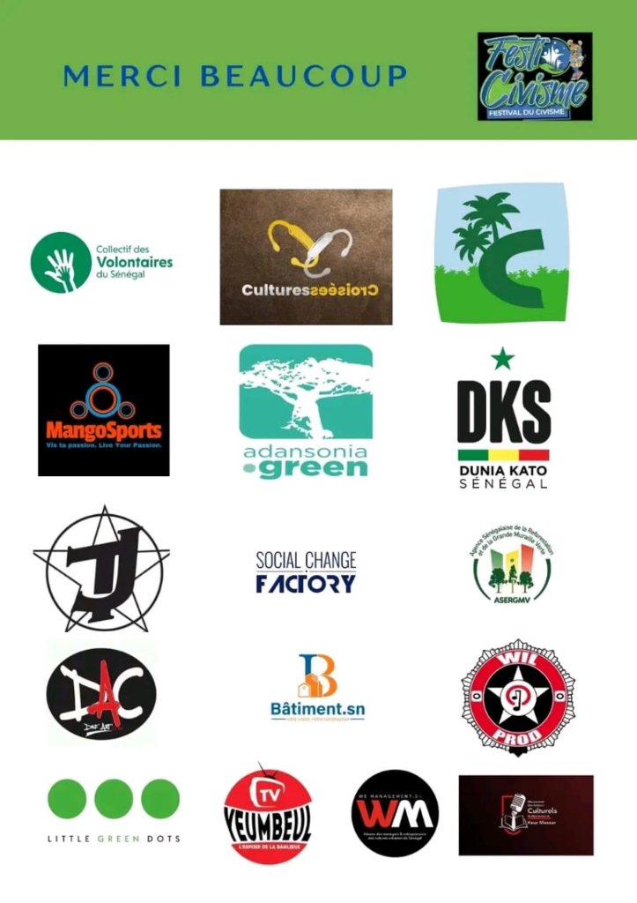
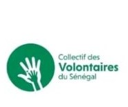
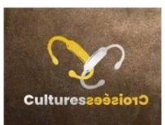
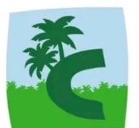
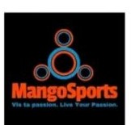
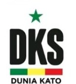
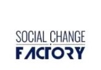
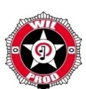
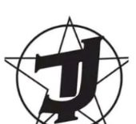

« Culture, environnement et citoyenneté : créons, engageons-nous et transformons notre communauté ! »
À Yeumbeul et dans le département de Keur Massar, le Festi'Civisme agit toute l'année sur le terrain à travers des journées de Set Setal (nettoyage), des campagnes de reboisement et des formations gratuites offertes aux jeunes.
Set Setal, Reboisement & Formations gratuites aux jeunes
Au-delà des 3 jours du festival, Prom'Art Compagnie et le FDCUIC organisent régulièrement à Yeumbeul des journées de nettoyage citoyen, des campagnes de reboisement et des ateliers pratiques gratuits.
Action Citoyenne • Avec l'UCG01
SALUBRITÉ & CADRE DE VIE
Journées de Set Setal (Nettoyage)
Opérations régulières de nettoyage et d'assainissement menées par les jeunes volontaires avec l'UCG et le Collectif des Volontaires du Sénégal.
Remise officielle du dossier de la 3ᵉ édition à Monsieur le Maire Babacar Ndao
La délégation du Festival du Civisme lors des échanges à la Mairie de Yeumbeul Nord
Audience MunicipaleMairie de Yeumbeul Nord • Keur Massar
Réception par Monsieur Babacar Ndao, Maire de la commune de Yeumbeul Nord
Nous avons eu le plaisir d’être reçus par Monsieur Babacar Ndao, Maire de la commune de Yeumbeul Nord, dans le cadre des préparatifs de la troisième édition du Festival du Civisme.
Cette rencontre, particulièrement riche en échanges et en perspectives, a permis de discuter des enjeux de cette nouvelle édition. Monsieur le Maire a manifesté son engagement et sa volonté de contribuer à la promotion du civisme à travers les arts et les cultures urbaines.
Nous adressons nos sincères remerciements à Monsieur le Maire ainsi qu’à toute son équipe de communication pour leur accueil, leur disponibilité et l’intérêt accordé à notre initiative.
Ensemble, faisons du Festival du Civisme un projet pérenne, fédérateur et porteur d’impact pour la commune de Yeumbeul Nord et l’ensemble du département de Keur Massar.
Ministère de l’Emploi et de la Formation professionnelleMinistère de la Jeunesse et des Sports - SénégalMinistère de la CultureMinistère de l'Environnement et du Développement Durable

Remise officielle de la présentation de la 3ᵉ édition à M. Sadia Bodiang à Yeumbeul Nord (cliquer pour agrandir)
AXES MAJEURS DES ÉCHANGES
Développement des jeunes & des femmes
Protection de l'environnement & santé
Valorisation des initiatives culturelles
Éveil des consciences & civisme
Rencontre & ConcertationYeumbeul Nord
Rencontre avec M. Sadia Bodiang, responsable politique de PASTEF à Yeumbeul Nord
Dans le cadre des préparatifs de la troisième édition du Festival du Civisme, nous avons eu le plaisir d'être reçus par M. Sadia Bodiang, responsable politique de PASTEF à Yeumbeul Nord.
Partenaire de réflexion et conseiller précieux depuis la précédente édition, M. Sadia Bodiang est également pour nous un grand frère et une véritable référence, notamment pour son engagement en faveur de la protection de l’environnement et de la promotion de la santé.
Nos échanges ont été particulièrement enrichissants. Ils ont porté essentiellement sur les enjeux du développement des jeunes et des femmes, la valorisation des initiatives culturelles ainsi que l’éveil des consciences et le renforcement de l’engagement citoyen des populations.
Nous lui adressons nos sincères remerciements pour son accueil, ses précieux conseils et, surtout, pour sa contribution à la réussite de cet événement.
Ministère de l'Éducation nationale du SénégalMinistère de la Jeunesse et des Sports - SénégalMinistère de l'Environnement et du Développement DurableMinistère de la CultureMinistère de l’Emploi et de la Formation professionnelle
APPEL VIDÉO OFFICIEL
Be First — Groupe Black RoomMembre fondateur de Black Room, manager d'artistes & entrepreneur culturel
Be First (Black Room) appelle les artistes, jeunes et acteurs politiques à se mobiliser
Be First, membre fondateur du groupe Black Room, manager d'artistes et entrepreneur culturel, lance un appel à l'ensemble des artistes, acteurs culturels, jeunes et acteurs politiques à se mobiliser pour la troisième édition du Festival du Civisme.
Il invite toutes les forces vives de la communauté à prendre part à cet événement citoyen, culturel et fédérateur, et à apporter leur soutien à cette initiative qui place la jeunesse, la culture et la citoyenneté au cœur du développement.
Ensemble, mobilisons-nous pour promouvoir le civisme et construire une société plus engagée !
Ministère de la Jeunesse et des Sports - SénégalMinistère de l'Environnement et du Développement DurableMinistère de la CultureMinistère de l'Éducation nationale du SénégalCasamançaise
MÉDIATHÈQUE TERRAIN • YEUMBEUL
En images : Formations, Set Setal & Audiences
Atelier : Comment rédiger un projet ?
Plan économique & Budget (DKS)
Travail de groupe & Montage de projet
Session plénière de formation
Set Setal • Synergie UCG
Mobilisation Jeunesse • Set Setal
Collecte citoyenne sur le terrain
Action Salubrité & Environnement
Assainissement communautaire
Mairie de Yeumbeul Nord
Échanges à la Mairie
Rencontre M. Sadia Bodiang
Structuration de projet (DKS)
Encadrement & Méthodologie
Participation des jeunes
Exercices pratiques en salle
Échanges & Réseautage jeunes
Intervention pédagogique
Concertation & Apprentissage
Affiche Officielle 2026

Tableau des Partenaires
19 AU 21 NOVEMBRE 2026 • YEUMBEUL NORD
Programme officiel sur 3 jours
JOUR 01Jeudi 19 Novembre 202609h00 – 17h30Yeumbeul Nord
FORMATION, PANEL D'OUVERTURE & RÉSEAUTAGE
Formations gratuites aux jeunes, Panel citoyen & Réseautage
Cérémonie officielle d'ouverture suivie des ateliers pratiques gratuits (« Comment rédiger un projet ? », plan économique & budgétisation avec DKS) et d'un panel sur l'engagement des jeunes et des femmes.
Rédaction de projetPlan économiquePanel citoyenRéseautage
JOUR 02Vendredi 20 Novembre 202609h00 – 18h00Écoles & Artères de Yeumbeul
REBOISEMENT, GRAFFITI & PANELS THÉMATIQUES
Campagne de Reboisement, Fresques Graffiti & Panels
Plantation d'arbres dans les établissements scolaires et espaces publics avec l'ASERGMV et Adansonia Green, création de fresques murales citoyennes et échanges sur l'écologie urbaine.
JOUR 03Samedi 21 Novembre 202608h30 – 23h00Yeumbeul Nord
GRANDE JOURNÉE DE SET SETAL & CONCERT DE CLÔTURE
Grand Set Setal Communautaire & Concert Citoyen de Clôture
Dès 08h30, grande mobilisation de nettoyage et d'assainissement avec l'UCG et les volontaires dans les quartiers de Yeumbeul, suivie en soirée du grand concert de clôture réunissant les artistes engagés.
Set Setal (Nettoyage)Synergie UCGScène UrbaineGrand Concert
Direction & coordination générale du Festi'Civisme
Partenaire OfficielFDCUIC
Fonds de Développement des Cultures Urbaines et des Industries Créatives
MYN
Collectivité HôteMairie de Yeumbeul Nord
Sous l'égide de Monsieur le Maire Babacar Ndao

Collectif des Volontaires du Sénégal

Cultures Croisées

Casamançaise

MangoSports
Adansonia Green

Dunia Kato Sénégal (DKS)

Social Change Factory
ASERGMV (Grande Muraille Verte)
Daf'Art (DAC)
Bâtiment.sn

Wil Prod
Little Green Dots
Yeumbeul TV
We Management.sn
Acteurs Culturels de Keur Massar

Collectif TJ
Ministères & Institutions Associés
Ministère de la Jeunesse et des Sports
Ministère de la Culture
Ministère de l'Environnement et du Développement Durable
Ministère de l'Éducation nationale
Ministère de l’Emploi et de la Formation professionnelle
ACCRÉDITATION & VOLONTARIAT
Obtenez votre Pass Citoyen 2026
Inscrivez-vous aux formations gratuites offertes aux jeunes ou rejoignez nos équipes pour les journées de Set Setal et de reboisement. Votre badge nominatif est généré instantanément.
Festi'Civisme — 3ᵉ Édition (19 au 21 Novembre 2026)
Organisé par Prom'Art Compagnie avec le FDCUIC, le Festival du Civisme mobilise la jeunesse autour de formations gratuites, de journées de Set Setal, de reboisement, de panels et d'arts urbains à Yeumbeul.
.jpeg) Action Citoyenne • Avec l'UCG
Action Citoyenne • Avec l'UCG
.jpeg)
.jpeg)

.jpeg)
.jpeg)

.jpeg)
.jpeg)

.jpeg)
.jpeg)
.jpeg)
.jpeg)
.jpeg)
.jpeg)
.jpeg)